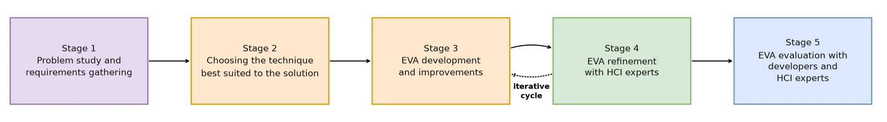

Summary
EVA is a conversational assistant that recommends interface evaluation methods based on each project's context. It was developed within EmoFrame, the framework I propose in my PhD. In the evaluation, people found the tool easy to use and the recommendations useful. A critical point for AI products also emerged: people use the recommendation, but they trust it more when they understand why it was made.
The problem
There are many evaluation methods in HCI, and choosing the right one is not simple. Cost, project stage, user profile and available time all matter. People with little experience or few resources often get stuck on questions like:
- Which method should I use?
- When should I apply it?
- Which one fits my budget?
- How can I understand a method quickly?
Having many options does not always help and can lead to worse choices or to giving up. The question was whether an AI assistant could guide this choice without taking judgment away from the evaluator.
Research question
Can an AI-based assistant recommend context-appropriate evaluation methods, in a useful and easy-to-use way, for professionals with different levels of experience?
Process

The project followed an iterative build, evaluate and adjust cycle in five stages:
- Understanding the problem (led by me): requirements gathering in meetings with HCI experts, to understand their needs when choosing methods and the kind of conversation the tool would need to support.
- Choosing the approach: a conversational interface with an LLM, so that interaction could happen in natural language.
- First working version.
- Evaluation cycles with experts: feedback on usability and on the quality of the recommendations, with adjustments until the version stabilized.
- Final evaluation with development professionals and HCI experts.
A decision driven by feedback
In stage 4, the experts pointed out an important limitation: the first version could not produce recommendations that combined different techniques, which is common in real practice. This feedback led the team to rethink how the assistant retrieves and organizes knowledge. It started using a knowledge graph about the methods and reasoning in steps before answering.
This is the point I would highlight: research with experts changed the product's architecture, not just its interface.
Final evaluation

Participants: 8 people who prototype or evaluate interfaces, half from academia and half from industry. Most evaluate occasionally (monthly or less), and two evaluate often (weekly or daily).
Procedure: individual sessions with recommendation tasks, followed by a three-section questionnaire (profile, recommendation quality and usability) and an interview.
Safeguards:
- Approved by the Ethics Committee, with free and informed consent.
- No participant had used the tool before, to preserve first impressions.
- All conversations were logged to analyze failures: 10 conversations and 54 interactions.
Key findings
I analyzed the questionnaire and session data, cross-checking responses on recommendation quality, usability and trust.
1. The recommendations were seen as useful.
All 8 participants rated the suggestions as equivalent to or better than the practices they already used: 4 found them equivalent, 3 much better and 1 better.
2. The interaction was simple.
Everyone agreed that EVA is easy to use (7 gave the highest score) and that response time is adequate. Few needed to rephrase their questions.
3. Trust was the weakest point.
"I felt confident" was the only item with a lowest score, plus two neutral answers. One participant suggested that the assistant show how it reached the recommendation.
4. There were failures, but they were rare.
There was 1 off-context answer in 54 interactions. Participants also had trouble changing topics in the middle of a conversation.
What changed as a result
| Finding | Design decision |
|---|---|
| Low trust in the recommendation | Add explanations to the interface, showing the criteria used and the reasoning path |
| Difficulty changing the conversation context | Refine dialogue context management |
| Sample with high digital literacy | Test with audiences less familiar with chatbots |
Limitations
- Small convenience sample. The plan was 10 participants, but recruitment reached 8.
- Because of their high digital literacy, participants may have rated ease of use optimistically.
- The results are early evidence of usefulness and usability, not a definitive validation.
What I learned
In AI products, being easy to use is not enough to build trust. A simple interface can hide exactly the information a person needs to decide whether to accept the recommendation. Evaluating trust separately from usability is what revealed this gap.